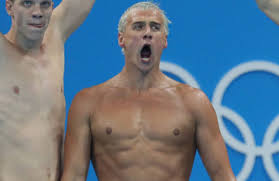
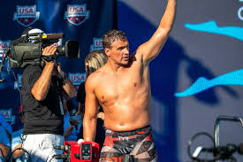

Ryan Steven Lochte (/ˈlɒkti/ LOK-tee; born August 3, 1984) is an American competitive swimmer and 12-time Olympic medalist. Along with Natalie Coughlin, Dara Torres, and Jenny Thompson, he is the second-most decorated swimmer in Olympic history measured by total number of medals, behind only Michael Phelps. Lochte's seven individual Olympic medals rank second in history in men's swimming (again to Michael Phelps), tied for second among all Olympic swimmers. He currently holds the world records in the 200-meter individual medley (long and short course). As part of the American teams, he also holds the world record in the 4×200-meter freestyle (long course) and 4x100-meter freestyle (mixed) relay. Lochte's success has earned him SwimSwam's Swammy Award for U.S. Male Swimmer of the Year in 2013, the World Swimmer of the Year Award and the American Swimmer of the Year Award twice. He has also been named the FINA Swimmer of the Year three times. He has won a total of 90 medals in major international competition (54 gold, 22 silver, and 14 bronze) spanning the Olympics, the World Championships, Pan American Games, and Pan Pacific Championships, including six Olympic gold medals and 39 world championship titles.  Lochte specializes in the backstroke and individual medley, but is also a freestyle and butterfly swimmer. He is noted for the speed and distance he attains while kicking underwater. Lochte is also known for his dominance in the short course format (25-yard and 25-meter-long pools). Lochte swam the 100-meter individual medley in 50.71 seconds on December 15, 2012, at the FINA World Championships in Istanbul, Turkey. At this same event, he is also credited with swimming the fastest 200-meter individual medley, finishing in 1 minute 49.63 seconds.  In 2016, Lochte generated international controversy when he claimed that he and three other American swimmers had been pulled over and robbed by armed men with police badges while in Rio de Janeiro, Brazil, for the 2016 Summer Olympics. Brazilian authorities sharply denied Lochte's version of events and shed light on misdeeds by Lochte and the other athletes that precipitated the events of the night. Lochte was widely criticized following the incident and was suspended from competition by USA Swimming. Some subsequent reports suggested that certain claims by the authorities might have been untrue and that Lochte's version of events might have been the result of language barrier and miscommunication.[9] On July 23, 2018,[10] the U.S. Anti-Doping Agency imposed a 14-month suspension from competition on Lochte because he had received a "prohibited intravenous infusion."[10] In February of 2020, Lochte signed on as an international swimming ambassador for the camps, events and programs at SPIRE Institute and Academy. It was announced that he will be engaging with students, conducting clinics and helping design the swimming program.